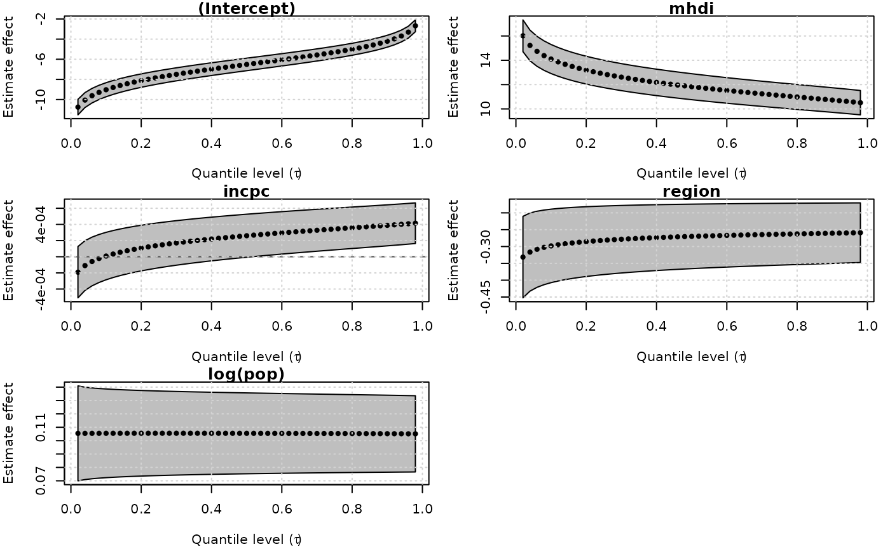

The goal of unitquantreg is to provide tools for estimation and inference on parametric quantile regression models for bounded data.
The package was written following the same interface as stats::glm function, containing several S3 methods for inference, residual analysis, prediction, plotting, and model comparison.
For more computation efficient the [dpqr]’s, likelihood, score and hessian functions are vectorized and written in C++.
The parameter estimation and inference are performed under the frequentist paradigm, and the optimx package is used to perform the numerical optimization. Besides that, the analytical score function are provided in the optimization process and the standard errors are computed from the analytical hessian matrix, both function are implemented in efficient away using C++.
The distribution families available are:
lt_families <- list("unit-Weibull" = "uweibull",
"Kumaraswamy" = "kum",
"unit-Logistic" = "ulogistic",
"unit-Birnbaum-Saunders" = "ubs",
"log-extended Exponential-Geometric" = "leeg",
"unit-Chen" = "uchen",
"unit-Generalized Half-Normal-E" = "ughne",
"unit-Generalized Half-Normal-X" = "ughnx",
"unit-Gompertz" = "ugompertz",
"Johnson-SB" = "johnsonsb",
"unit-Burr-XII" = "uburrxii",
"arc-secant hyperbolic Weibull" = "ashw",
"unit-Gumbel" = "ugumbel")The workhorse function is unitquantreg, which follows the same interface as stats::glm.
library(unitquantreg)
data(water)
lt_fits <- lapply(lt_families, function(fam) {
unitquantreg(
formula = phpws ~ mhdi + incpc + region + log(pop), data = water, tau = 0.5,
family = fam, link = "logit", link.theta = "log")
})
t(sapply(lt_fits, coef))
#> (Intercept) mhdi incpc
#> unit-Weibull -6.514485 11.826177 2.600473e-04
#> Kumaraswamy -1.625951 4.843166 2.111029e-03
#> unit-Logistic -5.365469 10.508100 1.559636e-03
#> unit-Birnbaum-Saunders -6.556648 13.723681 6.499360e-04
#> log-extended Exponential-Geometric -4.712735 9.142144 1.928040e-03
#> unit-Chen -8.098012 13.560938 -6.162645e-05
#> unit-Generalized Half-Normal-E -6.598061 11.731146 -1.037014e-04
#> unit-Generalized Half-Normal-X -5.035562 13.186081 1.580614e-03
#> unit-Gompertz -6.260194 11.719934 4.103341e-04
#> Johnson-SB -5.993763 11.803290 1.144566e-03
#> unit-Burr-XII -5.811837 11.043123 3.777215e-04
#> arc-secant hyperbolic Weibull -7.363838 12.705584 7.957473e-05
#> unit-Gumbel -9.338592 14.990026 -5.503130e-04
#> region log(pop) log(theta)
#> unit-Weibull -0.26990871 0.10546762 0.17249694
#> Kumaraswamy -0.07860323 -0.04727081 1.75778137
#> unit-Logistic -0.15826000 0.01773368 0.63005907
#> unit-Birnbaum-Saunders -0.18081222 -0.02300195 0.00832919
#> log-extended Exponential-Geometric -0.18882479 0.02252007 1.68797084
#> unit-Chen -0.48153890 0.19218762 -0.25568492
#> unit-Generalized Half-Normal-E -0.37220694 0.14224250 -0.18418543
#> unit-Generalized Half-Normal-X -0.16993805 -0.18341181 -0.38141377
#> unit-Gompertz -0.23932329 0.09146941 -5.42477111
#> Johnson-SB -0.19500756 0.01823070 0.01748328
#> unit-Burr-XII -0.19140000 0.07565710 0.28322367
#> arc-secant hyperbolic Weibull -0.38168564 0.14972053 0.72098495
#> unit-Gumbel -0.62080389 0.25058612 -0.26073820You can use the likelihood_stats to get likelihood-base statistics:
likelihood_stats(lt = lt_fits)
#>
#> Likelihood-based statistics of fit for unit quantile regression models
#>
#> Call: likelihood_stats(lt = lt_fits)
#>
#> Neg2LogLike AIC BIC HQIC
#> unit-Logistic -8443.029 -8431.029 -8394.140 -8417.855
#> Johnson-SB -8238.405 -8226.405 -8189.516 -8213.232
#> unit-Burr-XII -8096.114 -8084.114 -8047.225 -8070.941
#> unit-Weibull -7994.077 -7982.077 -7945.188 -7968.903
#> unit-Birnbaum-Saunders -7955.990 -7943.990 -7907.101 -7930.817
#> unit-Gompertz -7808.838 -7796.838 -7759.949 -7783.664
#> arc-secant hyperbolic Weibull -7679.482 -7667.482 -7630.593 -7654.308
#> log-extended Exponential-Geometric -7677.034 -7665.034 -7628.145 -7651.860
#> unit-Generalized Half-Normal-E -7496.966 -7484.966 -7448.077 -7471.792
#> Kumaraswamy -7188.498 -7176.498 -7139.609 -7163.324
#> unit-Chen -7016.542 -7004.542 -6967.653 -6991.368
#> unit-Generalized Half-Normal-X -6965.962 -6953.962 -6917.073 -6940.789
#> unit-Gumbel -6531.775 -6519.775 -6482.886 -6506.602It is also possible to perform pairwise Vuong test to model selection of nonnested models.
# Select just a few model to not mess the output
lt_chosen <- lt_fits[c("unit-Logistic", "Johnson-SB", "unit-Burr-XII", "unit-Weibull")]
pairwise.vuong.test(lt = lt_chosen)
#>
#> Pairwise comparisons using Vuong likelihood ratio test for non-nested models
#>
#> data: unitquantreg(formula = phpws ~ mhdi + incpc + region + log(pop),
#> data = water, tau = 0.5, family = fam, link = "logit", link.theta = "log")
#>
#> unit-Logistic Johnson-SB unit-Burr-XII
#> Johnson-SB 0.00031 - -
#> unit-Burr-XII 3.9e-07 0.09659 -
#> unit-Weibull 8.8e-11 0.00013 0.04868
#>
#> P value adjustment method: holmThe currently methods implemented for unitquantreg objects are:
methods(class = "unitquantreg")
#> [1] coef confint fitted hnp logLik
#> [6] model.frame model.matrix plot predict print
#> [11] residuals summary terms update vcov
#> see '?methods' for accessing help and source codeAnother feature of unitquantreg package is to fit different models for several quantiles values.
fits <- unitquantreg(formula = phpws ~ mhdi + incpc + region + log(pop),
data = water, tau = 1:49/50, family = "uweibull",
link = "logit", link.theta = "log")
class(fits)
#> [1] "unitquantregs"Then, the user can visualize the results using the plot method:
plot(fits, which = "coef", mean_effect = FALSE)
The currently methods implemented for unitquantregs objects are:
methods(class = "unitquantregs")
#> [1] plot print summary
#> see '?methods' for accessing help and source code